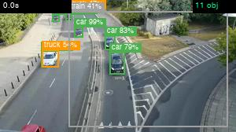

I ran Faster R-CNN (ResNet-50-FPN) — a standard, COCO-pretrained, fully open-source detector — over every sampled frame of a 60-second 4K traffic clip. No fine-tuning, no cloud API, no labels. 5,136 detections later, here's everything it found — the things it nails, and the handful it gets confidently wrong. Press play, scrub the timeline, and inspect the real annotated frames.
The clip
The detector ran frame-by-frame. As the video plays, the panel on the right shows the nearest analyzed frame with the model's real bounding boxes and confidence scores. Click any segment on the timeline to jump there.

Real frame from the detector — every box and % is its own output.
The honest part
On road scenes the model is exactly what you'd hope: cars, trucks, people and buses dominate, at high confidence. But it can only name the 80 things COCO taught it — so when it meets something out-of-distribution, it reaches for the closest label it knows. The result is a set of plausible-looking false positives: a long articulated bus read as a "train," windshield glare as a "cup," lane markings as "ties" or "scissors." This is the everyday reality of shipping an off-the-shelf detector.
The classes a traffic scene should contain — and the model's bread and butter.
No trains, cups or scissors are on this road. These are the model guessing.
By the numbers
Of COCO's 80 classes the model could name, only 18 ever showed up. And the scene gets steadily busier toward the middle — here's the object count across the sampled frames.
Object flow
Each band is one class; its thickness is that class's share of detections in that segment. Cars stay dominant throughout, while trucks, buses and people ebb and flow — and the spurious classes flicker in and out. Hover a band to trace one class; click a segment to jump the video there.
The evidence
40 real frames pulled straight from the detector, boxes and confidence scores drawn by the model itself. Click any frame to jump the video to that moment.
Under the hood
No magic and no proprietary models — five steps, all running on a laptop CPU/GPU.
OpenCV reads the clip and samples every Nth frame — 225 frames from the 60s clip.
Each frame runs through torchvision's Faster R-CNN (ResNet-50-FPN), COCO-pretrained.
Keep boxes scoring ≥ 0.40 confidence; draw them back onto the frame with labels.
Split the timeline into 8 windows of roughly equal detection "mass" — busy stretches get shorter windows.
Tally counts and confidence per class and segment, then render this page.
Keeping it honest
A clear-eyed read on the model matters more than an impressive-looking number.
There are no ground-truth labels for this clip, so precision, recall and F1 are genuinely unmeasurable here. I won't print a metric I can't compute — "plausible vs. spurious" below is an honest human read, not a benchmark.
The model can only ever say one of 80 words. Anything outside that — a tram, a scooter, road debris — gets forced into the nearest known class or missed entirely.
These are stock pretrained weights. A few hours fine-tuning on traffic footage would kill most of the false positives — that's the point this demo makes.
60 seconds, daytime, one fixed camera. Conclusions about the model's behavior generalize; these exact counts don't.